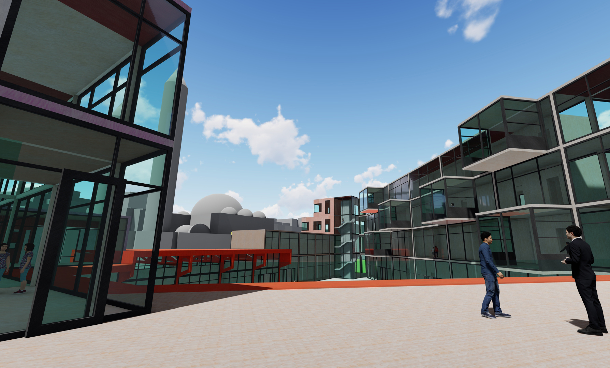
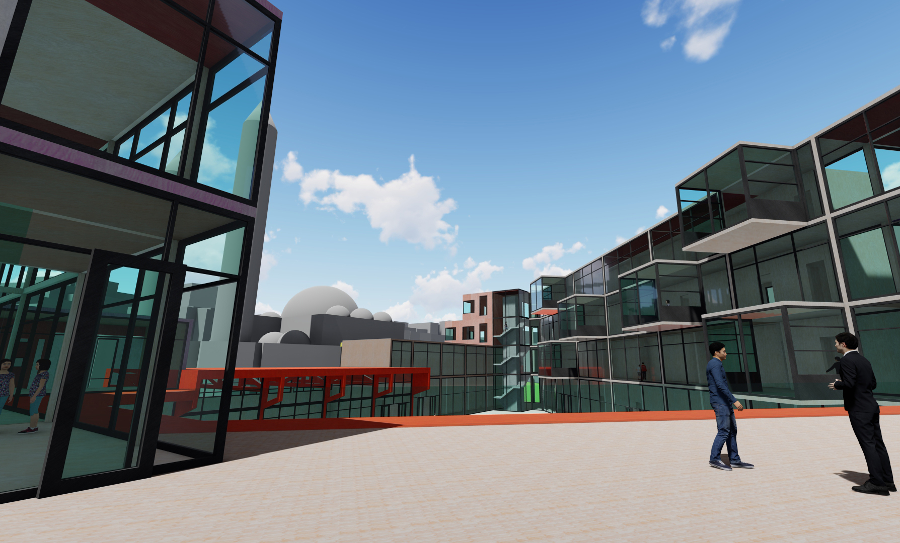
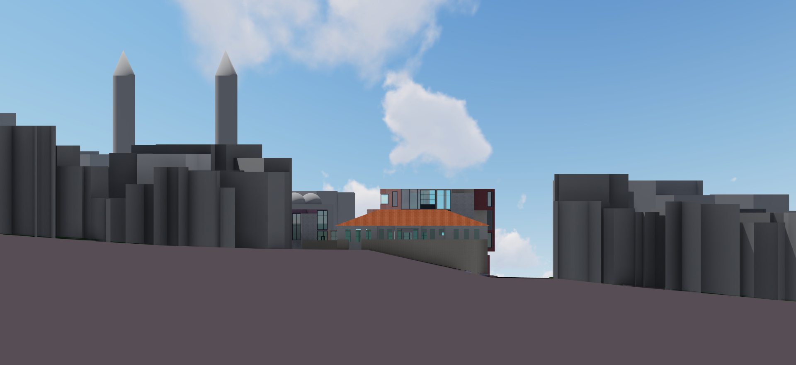
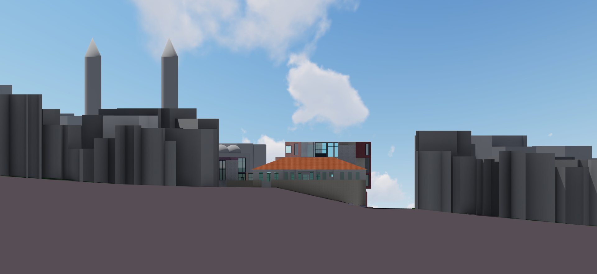

Tarihi Yarımada içerisinde önemli bir konumda bulunan proje arsasında halihazırda mevcut olan ve tarihi jandarma mektebinin yetersiz yönlerinin geliştirildiği, eksiklerinin tamamlandığı projede 16 derslikli ortaokul destek mekanlarıyla birlikte tasarlanmıştır. Proje arsası içerisinde yer alan tarihi yapının zemin katı okulun idari bölümü için ayrılmış olup bodrum katı ticari amaçla kullanılmak üzere geliştirilmiştir. Projenin diğer bölümlerinde ise çökertilmiş avludan erişilebilen yemekhane, kapalı spor salonu ve çok amaçlı salon bulunmaktadır. Kütüphane, atölyeler ve labaratuvarlar, derslikler ise diğer kütleleri oluşturmaktadır.
 



 
